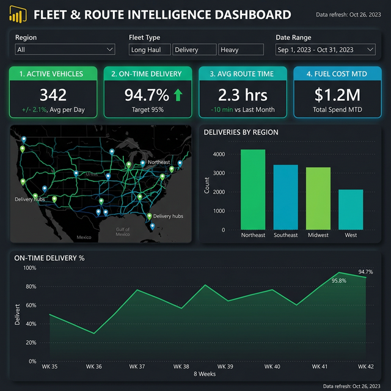

The Challenge
A regional 3PL provider managing last-mile delivery for retail clients was struggling with visibility gaps. Dispatch teams relied on phone calls to track drivers, route planning was done manually in Excel, and fuel costs were only analyzed quarterly. Late deliveries were averaging 12%, triggering penalty clauses with key clients.
Key Business Questions
- Where are all 342 vehicles right now, and what is their ETA status?
- Which routes consistently miss on-time targets, and why?
- How does fuel consumption vary by fleet type and region?
- What is the weekly on-time delivery trend, and are we improving?
The Solution
We built a Fleet Intelligence platform integrating GPS telematics, warehouse management systems, and fuel card data into a unified operational view:
🚛 Live Fleet Map
Real-time GPS tracking of 342 vehicles with route overlays, hub locations, and ETA deviations highlighted on an interactive map.
📈 On-Time Trending
8-week rolling on-time delivery percentage — improved from 88.3% to 94.7% through route optimization and driver coaching.
🌎 Regional Performance
Deliveries by region: Northeast (4,200), Southeast (3,800), Midwest (2,100), West (1,900) — identifying underserved markets.
⛽ Fuel Analytics
$1.2M MTD fuel cost tracking with per-mile efficiency metrics by fleet type (Long Haul, Delivery, Heavy) and route optimization savings.
Dashboard Views

Technical Implementation
Data Architecture
Azure IoT Hub for telematics ingestion (5-second GPS pings), Azure Maps for geospatial rendering, Event Hubs for real-time stream processing.
Key Metrics
- On-Time Delivery %
- Average Route Time
- Fuel Cost per Mile
- Deliveries per Vehicle/Day
IoT Integration
- GPS Telematics (Geotab)
- ELD Compliance Data
- Fuel Card API (WEX)
- WMS Dispatch Events
Route Optimization
Machine learning route scoring model that factors in traffic patterns, weather, delivery windows, and vehicle capacity to recommend optimal sequencing.
The Results
"We avoided $340K in late delivery penalties in the first quarter alone. The route optimization alone paid for the entire platform within 60 days."